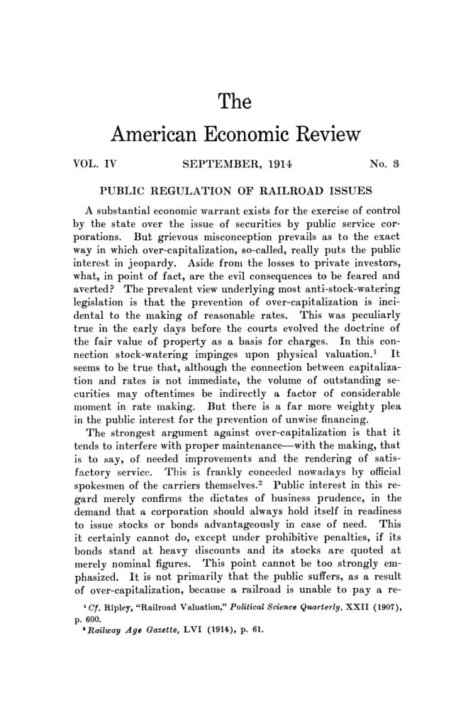

Ripley, 1914: quando a diluição do capital derruba o serviço
Leitura: 7 min
Ripley sustentou que o maior dano do excesso de títulos não está nas tarifas, mas no serviço, e comparou Nova York, Massachusetts e Texas para defender o controle federal das emissões ferroviárias.


Os bondes da Metropolitan Street Railway, de Nova York, duravam no máximo dez anos, mas desde a organização da companhia, em 1893, as linhas de superfície praticamente não reservaram nada para depreciação. Nos cinco anos anteriores à concordata, nenhum carro novo foi comprado. Milhões se perderam pela desonestidade dos administradores, e a passagem ficou em cinco centavos o tempo todo. Foi o colapso do serviço, e não a tarifa, que mobilizou a opinião pública e levou à reforma.
William Z. Ripley, da Harvard University, usa o caso para inverter a justificativa habitual das leis contra a diluição do capital, então em discussão nos Estados Unidos e no Canadá.
Onde o público perde com o excesso de títulos?
A visão corrente era que impedir a supercapitalização servia para manter tarifas razoáveis. Ripley admite que o volume de títulos pode pesar indiretamente nas tarifas, mas diz que o argumento mais forte está na manutenção. Uma empresa supercapitalizada pode, por algum tempo, pagar juros e dividendos com recursos que deveriam ir para conservação e melhorias, e não consegue levantar capital quando precisa, porque seus títulos estão muito abaixo do par e suas ações valem pouco.
Os exemplos são recentes. O caixa da Alton foi esvaziado, e o grupo Rock Island, ao assumir a ferrovia, teve de emitir notas de equipamento a juros ruinosos para continuar operando. Na Nova Inglaterra, o colapso da New Haven em 1912 e 1913 trouxe atrasos intoleráveis e acidentes, porque todos os recursos tinham ido para a busca do monopólio a qualquer custo.
“Tarifas excessivas podem tomar uma parte, de fato, mas nunca o todo.” (“Unreasonable rates may take a part, indeed, but never the whole.”)
Quando o serviço quebra, diz Ripley, a comunidade sofre perdas que equivalem a confisco total.
Basta a publicidade?
A política mais modesta confia na publicidade. Foi a defendida pela Railroad Securities Commission federal de 1910, que via ênfase excessiva em manter baixo o valor nominal das ações e pouca em obter o capital necessário e usá-lo bem, e que temia dar a impressão de uma garantia oficial. A mesma filosofia guiara a reforma da lei de sociedades de Massachusetts depois do relatório de 1903 e as leis Blue Sky, adotadas desde 1908 por dezoito estados para proteger investidores contra promoções fraudulentas.
Para as empresas de serviço público, porém, os estados foram além. Massachusetts e Texas regulavam emissões havia muito tempo, e desde 1908 treze outros estados criaram comissões com poder sobre as finanças das empresas. Nessas leis, emitir títulos é um privilégio que exige licença, concedida depois de exame público da finalidade, da necessidade e das condições da emissão.
Como Nova York aplicou o controle?
Ripley considera o caso de Nova York o mais instrutivo. A antiga comissão ferroviária fora inexpressiva: em 1893, recusada a aprovação de um aumento de US$ 6 milhões no capital de uma linha de barcas, Thomas Ryan e associados imprimiram os títulos assim mesmo e os trocaram por ações da Metropolitan. Por iniciativa do governador Hughes, em 1907 foram criadas duas comissões, uma para a região metropolitana e outra para o resto do estado.
As decisões fixaram princípios. As contas de capital devem ser encerradas quando a construção termina, e despesas de operação não podem ser capitalizadas. A Lehigh and Hudson River foi proibida, em 1909, de vender títulos para reembolsar gastos que não eram de capital; a Erie, em 1912, pôde capitalizar US$ 12 milhões que comprovou ter investido com lucros. No caso da New Haven, que pagara mais de US$ 900 mil por uma linha de bondes que a comissão avaliou em US$ 400 mil, a Court of Appeals decidiu, pela primeira vez no estado, que o custo não controla necessariamente a capitalização.
A comissão metropolitana também passou a exigir que deságios aparecessem como tal. Um balanço não poderia mais mostrar US$ 5 milhões em construção e equipamento quando US$ 4,5 milhões eram deságio de notas vendidas a 70 e resgatadas ao par em três meses.
Massachusetts foi rígido demais?
A restrição funcionou. Em 1912, os bondes de Connecticut, que até 1913 não tinham controle algum, eram capitalizados em US$ 115.810 por milha de linha; os de Massachusetts, incluindo o caro sistema elevado de Boston, em US$ 63.300. Tomando Massachusetts como padrão, Ripley estima a supercapitalização de Connecticut em cerca de US$ 52.500 por milha.
Mas o estado errou o foco, concentrando-se no preço de emissão das ações. A lei de 1894 exigia que novas ações fossem vendidas pelo valor de mercado fixado pela comissão. Funcionou enquanto os preços subiam: a Boston and Maine emitiu ações a US$ 190 e a US$ 165. Com o pânico de 1903, o capital secou, e uma grande empresa teve de tomar empréstimos de curto prazo a 8% por não conseguir vender ações ao ágio fixado. A lei de 1908 deixou o preço aos acionistas, sujeito à aprovação da comissão, e em 1913 o lobby da New Haven obteve, como preço de seu apoio à nova comissão, um limite mais alto para títulos de longo prazo.
E o Texas?
A lei texana de 1893 seguiu o caminho oposto: proibia novos títulos até que toda a supercapitalização antiga fosse eliminada. Conteve o excesso. Entre 1894 e 1906, a malha do estado cresceu cerca de um quarto, para 12.058 milhas, enquanto as ações e títulos por milha caíram de US$ 40.802 para US$ 31.530. Mas a dívida flutuante subiu de US$ 30,3 milhões para US$ 76,5 milhões, e as melhorias foram penalizadas: em 1906, 23 das 55 ferrovias do Texas tiveram déficit. O capital para trilhos pesados e pontes de aço veio de ferrovias controladoras de fora do estado, e Ripley conclui que moradores de outros estados forneciam ao Texas um transporte pelo qual ele não pagava.
Por que a solução seria federal?
Os escândalos da New Haven, da Rock Island e da Frisco, todas interestaduais, mostravam a necessidade de ação federal. Seis comissões estaduais participavam da reorganização da Wabash, e cada uma precisava aprovar o plano. Tarifas, serviço e finanças estavam tão entrelaçados que nenhum deles podia ser regulado sem os outros. Ripley considera insuficientes a publicidade pura e uma solução intermediária baseada na responsabilidade criminal dos diretores, porque nenhuma delas tiraria de campo as comissões estaduais. Só a concessão de poderes amplos à Interstate Commerce Commission traria uniformidade e acabaria com a evasão.
Na minha leitura
Na minha leitura, a contribuição mais duradoura de Ripley é deslocar o critério da regulação financeira do preço para o investimento. A supercapitalização importa porque compromete a capacidade de a empresa financiar manutenção e expansão, e o custo disso recai sobre o usuário como serviço pior, não como tarifa mais alta. É um argumento sobre alavancagem e subinvestimento.
A comparação entre estados é quase um experimento. Massachusetts e Texas mostram, por lados opostos, que regras rígidas sobre o passivo podem secar o capital necessário, e Nova York aparece como o meio-termo, com discrição administrativa e contabilidade rigorosa. O texto não mede o efeito de cada regime sobre o investimento, mas organiza os casos de modo que essa pergunta possa ser feita.
Glossário
- Diluição do capital (stock watering)
- emissão de ações ou títulos acima do capital efetivamente investido.
- Supercapitalização
- situação em que o valor nominal dos títulos de uma empresa excede o valor do investimento ou da capacidade de lucro.
- Concordata (receivership)
- administração judicial de uma empresa insolvente por um interventor nomeado pelo tribunal.
- Deságio
- diferença entre o valor de face de um título e o preço pelo qual foi vendido.
- Dívida flutuante
- dívida de curto prazo, não consolidada em títulos de longo prazo.
- Lei Blue Sky
- lei estadual americana que exige registro ou licença para a venda de títulos.
- Notas de equipamento
- títulos garantidos pelo material rodante comprado com seus recursos.
Fontes
- Public Regulation of Railroad Issues — William Z. Ripley, Harvard University (pp. 541–564). JSTOR · Internet Archive (PDF)
- Edição completa, com os demais artigos: Nº 131 do Arquivo.
Documento em domínio público (EUA, publicado antes de 1931), via JSTOR Early Journal Content e Internet Archive. Resumo e comentário do autor deste site, sem afiliação com a American Economic Association. Encontrou um erro? Escreva: a correção é publicada no próprio texto, com data.
↑ Nº 131 · Setembro de 1914: títulos ferroviários, lucros ocultos e o Panamá Clark, 1914: o retorno justo quando o dólar encolhe →